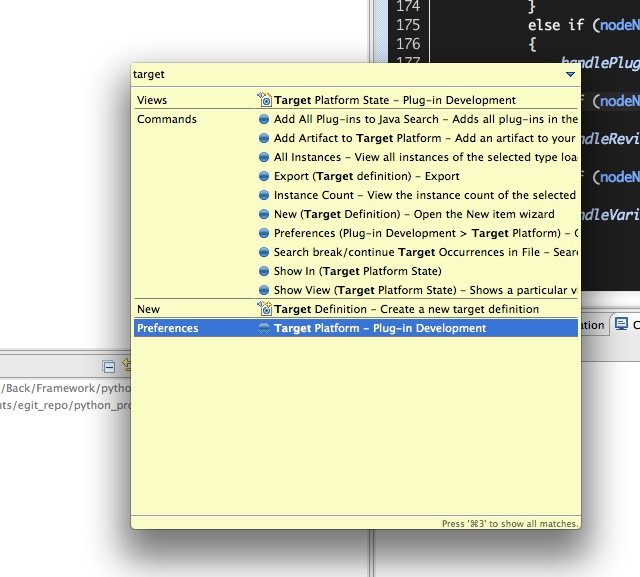
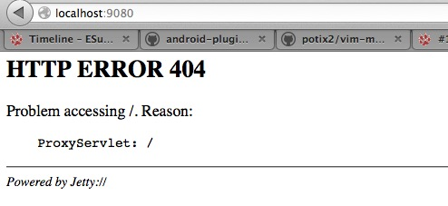

在OSGi中部署Web应用
概述
在很久很久以前，我们用 ‘HTTP Registry’_ 在OSGi环境中注册Servlet，JSP以及静态资源。或者通过 HTTP ServletBridge 在Web容器中启动一个OSGi的方式来实现Web应用和OSGi的集合。在很多文章 [1] 中都有描述。 但是这样的方式让传统的Web程序员望而生畏他们熟悉的web.xml文件，WEB-INF文件夹在 ‘HTTP Registry’_ 方式中都不见了， 更要命的是对Filter都没有的支持还不全。 为了实现模块化他们甚至要重现学习OSGi的相关内容。所以他们停住了脚本。 不过现在好了，有了 org.eclipse.jetty.osgi.boot 这一切都发生了改变。
- 本文假定读者对如下知识有所了解：
- Java基础知识。
- Java中的Classloader机制。
- OSGi Plugin 开发的基本步骤。
什么是org.eclipse.jetty.osgi.boot
org.eclipse.jetty.osgi.boot是Jetty项目的一部分。本质而言他就是Jetty中的Start.jar在OSGi中的替代品。他会根据${jetty.home} 这个系统参数找到jetty.xml这个文件。并根据该文件的配置的在OSGi中启动一个真实的Jetty Server。 新启动的这个Jetty Server的classloader 会包括org.eclipse.jetty.osgi.boot 这个bundle的所能看到的所有类和其他资源，${jetty.home}/lib/ext 和${jetty.home}/resources中的所有类及其他资源。
部署传统的Web 应用
既然上面已经提到了org.eclipse.jetty.osgi.boot 启动的是一个标准的Jetty Server。 所以我们在部署的传统的Web 应用的时候，主需像在传统的Jetty Server中部署Web一样就可以了。 下面我们就一步一步做一遍。 在开始之前我们要确认一下所需要的库：
- JDK 1.5 向上。
- OSGi Framework， 推荐Equniox 下载地址为： http://download.eclipse.org/equinox/
- Jetty Bundles发行包 下载地址为： http://download.eclipse.org/jetty/updates/jetty-bundles-8.x/8.1.5.v20120716/
- 带有PDE 的Eclipse。 下载地址为： http://www.eclipse.org/downloads/
准备Target Platform
将OSGi Framework 和Jetty Bundles解压到同一个文件夹。假定该目录为${Target_Path}。打开Eclipse，通过菜单Windows –> Preferences –> target 打开Target Platform的设定界面，也可以通过Ctrl+3 输入”Target Platform”来打开Target Platform设定界面。
新建一个Target Platform, 把${Target_Path} 加入到该Target Platform中。 并勾选新建的Target Platform为当前Platform。
新建Debug Configuration
Ctrl+3 输入”Debug Configuration”, 打开Debugy 配置界面。在”OSGi Framework”下新建一个启动配置。 选取如下插件：
com.springsource.javax.xml.stream_1.0.1
com.springsource.net.sf.cglib_2.1.3
com.springsource.org.aopalliance_1.0.0
com.springsource.org.apache.commons.codec_1.3.0
com.springsource.org.apache.commons.logging_1.1.1
com.springsource.org.apache.juli.extras_6.0.18
com.springsource.org.apache.log4j_1.2.15
com.springsource.org.apache.xmlbeans_2.4.0
com.springsource.org.objectweb.asm.commons_3.1.0
com.springsource.org.objectweb.asm.tree_3.1.0
com.springsource.org.objectweb.asm_3.1.0
javax.annotation_1.1.0.v201105051105
javax.el_2.2.0.v201108011116
javax.servlet.jsp.jstl_1.2.0.v201105211821
javax.servlet.jsp_2.2.0.v201112011158
javax.servlet_3.0.0.v201103241009
org.apache.commons.collections_3.2.0.v200803061811
org.apache.commons.lang_2.3.0.v200803061910
org.apache.commons.pool_1.5.6
org.apache.geronimo.specs.geronimo-activation_1.1_spec_1.0.2
org.apache.geronimo.specs.geronimo-j2ee-management_1.1_spec_1.0.1
org.apache.geronimo.specs.geronimo-javamail_1.4_spec_1.3.0
org.apache.jasper.glassfish_2.2.2.v201112011158
org.apache.taglibs.standard.glassfish_1.2.0.v201112081803
org.aspectj.runtime_1.6.4.20090304172355
org.aspectj.weaver_1.6.4.20090304172355
org.eclipse.core.contenttype_3.4.1.R35x_v20090826-0451
org.eclipse.core.jobs_3.4.100.v20090429-1800
org.eclipse.core.runtime_3.7.0.v20110110
org.eclipse.equinox.app_1.3.100.v20110321
org.eclipse.equinox.common_3.5.0.v20090520-1800
org.eclipse.equinox.http.servlet_1.0.200.v20090520-1800
org.eclipse.equinox.preferences_3.4.0.v20110502
org.eclipse.equinox.registry_3.4.100.v20090520-1800
org.eclipse.jetty.continuation_8.1.0.v20120127
org.eclipse.jetty.deploy_8.1.0.v20120127
org.eclipse.jetty.http_8.1.0.v20120127
org.eclipse.jetty.io_8.1.0.v20120127
org.eclipse.jetty.jmx_8.1.0.v20120127
org.eclipse.jetty.jndi_8.1.0.v20120127
org.eclipse.jetty.nested_8.1.0.v20120127
org.eclipse.jetty.osgi.boot_8.1.0.v20120127
org.eclipse.jetty.osgi.httpservice_8.1.0.v20120127
org.eclipse.jetty.security_8.1.0.v20120127
org.eclipse.jetty.server_8.1.0.v20120127
org.eclipse.jetty.servlet_8.1.0.v20120127
org.eclipse.jetty.util_8.1.0.v20120127
org.eclipse.jetty.webapp_8.1.0.v20120127
org.eclipse.jetty.xml_8.1.0.v20120127
org.eclipse.osgi.services_3.3.0.v20110513
org.eclipse.osgi_3.7.2.v20120110-1415
org.hamcrest.core_1.1.0.v20090501071000
在启动阐述中加入
-Djetty.home=${jetty.home}
在${jetty.home} 这个目录中包括如下结构：
.
├── contexts
├── etc
│ └── jetty.xml
├── lib
│ └── ext
├── resources
└── webapps
这个时候启动刚才新建的Debug 配置。这时去访问etc/jetty.xml 配置的端口（我本机设定是9080端口，所以我的访问地址是http://localhost:9080）。会的到如下效果。
各位看官可能会说：这不就是一个404错误页面吗，还是Jetty的。有什么好炫耀的啊！真的没有炫耀，只是用他来说明一个问题! 说明我们的org.eclipse.jetty.osgi.boot 启动了一个Jetty服务。因为这个服务中没有部署任何web应用所以给他给出了一个404错误。 我们下一步就是去部署一个传统的Web应用。 我这个应用很简单，只有一个静态页面。war的具体结构如下：
META-INF/MANIFEST.MF
build.properties
WEB-INF/web.xml
index.html
把这个war直接放到${jetty.home}/webapps目录下。我们可以从控制台看到如下信息：
2012-12-17 18:21:28.193:INFO:oejd.DeploymentManager:Deployable added: jetty-home/webapps/org.web.war
2012-12-17 18:21:28.280:INFO:oejw.WebInfConfiguration:Extract jar:file:jetty-home/webapps/org.web.war!/ to /private/var/folders/z3/38fg6pfx37z6tbfw6878tps80000gn/T/jetty-0.0.0.0-9080-org.web.war-_org.web-any-/webapp
2012-12-17 18:21:28.599:INFO:oejsh.ContextHandler:started o.e.j.w.WebAppContext{/org.web,file:/private/var/folders/z3/38fg6pfx37z6tbfw6878tps80000gn/T/jetty-0.0.0.0-9080-org.web.war-_org.web-any-/webapp/}, /temp/jetty-home/webapps/org.web.war
2012-12-17 18:21:28.599:INFO:oejsh.ContextHandler:started o.e.j.w.WebAppContext{/org.web,file:/private/var/folders/z3/38fg6pfx37z6tbfw6878tps80000gn/T/jetty-0.0.0.0-9080-org.web.war-_org.web-any-/webapp/}, /temp/jetty-home/webapps/org.web.war
这个时候我们访问一下 http://localhost:9080/org.web/ 这个url。可以看到如下效果：